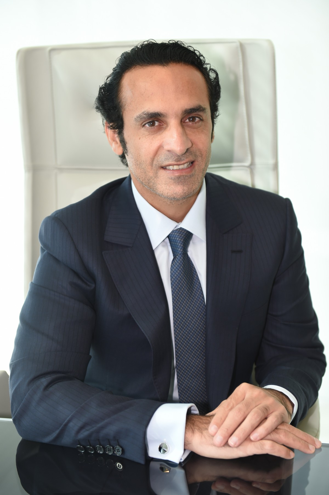
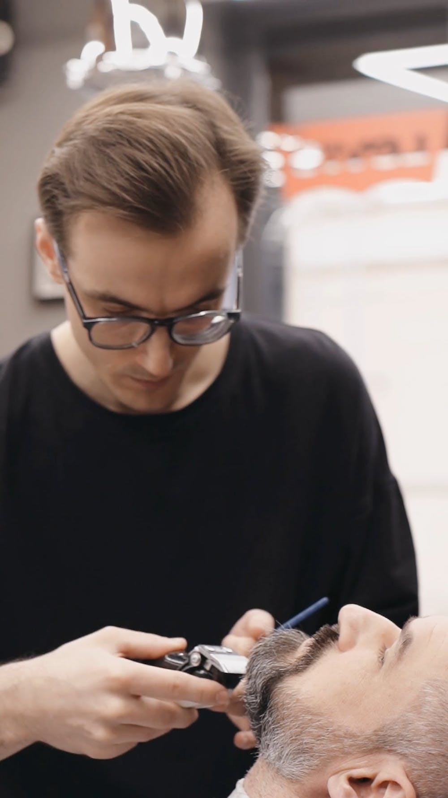

Gilbert Chamber of Commerce
Our Audience
Our primary audience will be local business owners who seek to work together to improve the business climate of the area, but other visitors may include those who are looking into the area as a possible place to start a business, move, or even just visit. The age range will include those still running businesses, either early in life or right before retirement, so we can expect anyone from 20-65.
Persona 1
Matthew Stephenson owns golf clubs around Arizona, and is looking to start a new location locally in Gilbert. He is 49 years old, and has been in the business a long time. He has hundreds of employees and is looking to bring a premium golf course to those who want it.
Persona 2
Landrey Atkins is the owner of a local barber shop, he prides himself on giving his customers the best service he can while providing a comfortable atmopshere. He only has one employee, and does much of the grunt work himself. He is 27 years old, and he's looking to grow his business.
Scenarios
- Non local business wants to establish a franchise or location in Gilbert.
- Local business wants to expand, and establish connections in the business comunity.
- A local entrepreneur wants to start a new business.
- A local business and franchise are having a dispute.
- A new startup is looking for investors.